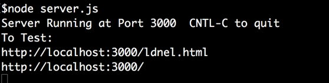
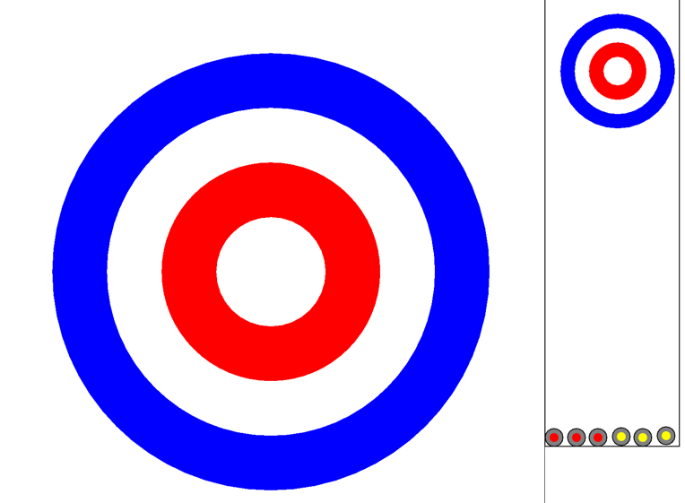
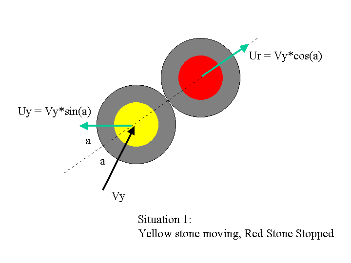
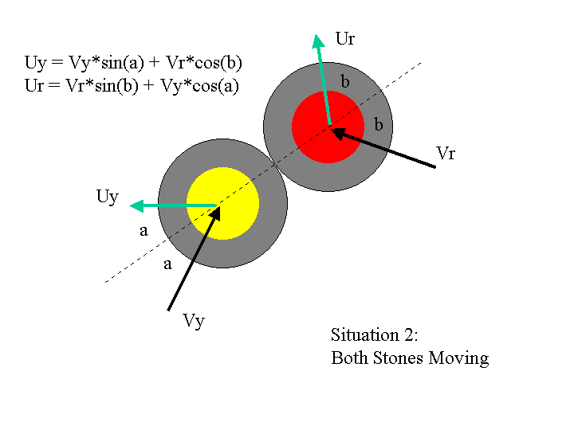
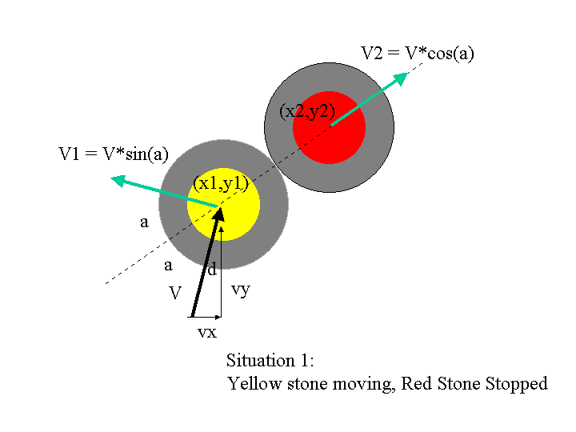
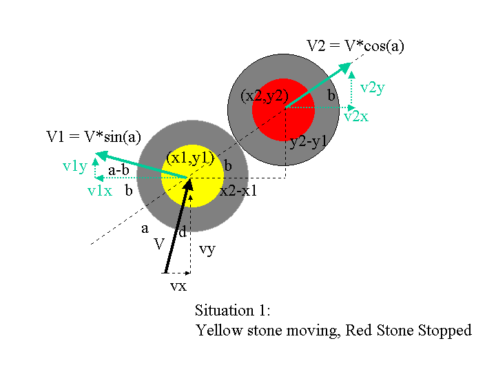

Assignment Revisions and Corrections will be noted here.
With this assignment we introduce some new web app elements.
1) We break away from the strict HTTP request-response model and allow asynchronous communication between client and server using web sockets. This means that the server can send data to a client that is not in direct response to a request from that client. This makes real-time collaboration (like chat rooms) possible.
2) We introduce the use of external NPM modules to provide web socket capabilities. These allow asynchronous communication between client and servers using the world wide web's HTTP protocol.
3) We introduce the design problem of "who is in charge of the data and decision making". It could be the server, a client, serveral clients. There is no right answer so you will have to make design choices. This is an ongoing design dilemma that you will always face when building web apps.
In this assignment you will build a real-time collaborative app based on web sockets and specifically npm's socket.io module (illustrated with demo code in the course notes and in tutorial 05). Since this is meant to be a an app that allows people working in different browsers to collaborate you might take advantage of the fact that we can host servers on the OpenStack virtual machines that can be reached by several different machines.
In this assignment you are going build a single page client-server app based primarily on native capabilties of Node.js, however this time you will use the npm module socket.io to implement asynchronous real-time data exchange between client and server. You are also free to import (or more correctly "require") other simple npm modules from the npm (node package manager) registry. However, the use of Express.js and similar "high level" frameworks is still not allowed for this assignment. This is still primarily a javascript programming exercise and we still want you to build an app based primarily on node.js built in capabilities with a few helper modules.
The components are:
Server build with just Node.js and its build in modules (e.g. http, path, fs, url), and that makes use of the npm socket.io module. You MAY NOT use express.js. If you have any doubts about whether you can require a certain npm module please check with me ahead of time.
Client: browser that is provided with a web page from the server consisting of html, css, javascript and jquery. (You can use which ever of these your want.) After what you discovered in tutorial 04 you can strip out all jQuery if you want -the choice is yours.
Assignment Restrictions:
Technology Restrictions: You need to use the npm socket.io modules, other simple modules you might want (but no others are actually needed). You may not use the express.js framework or other higher level frameworks in this assignment. If in doubt ask about any modules you intend to include.
Assignments may be done in pairs: If you want to work with a partner you can. Please only submit one copy to culearn with both your names on it. (In the past we have had pairs who each thought the other member would submit and so nothing got submitted and both got zero.)
Marking: This assignment is based on 14 design requirements numbered R1.1...R3.9 for a total of 28 marks.
Marks are awarded, or deducted, based on itemized requirements as follows:
| Req Type | Marking |
|---|---|
| R0.x | Assignment gets 0 if any critical submission |
| R0.x | You lose 2 marks for each good practice |
| R0.x | You earn 2 marks for each design requirement (green) satisfied and well implemented; 1 mark if it's partly met or met but not well implemented; and 0 if it's not met. |
The following requirements pertain to all your assignments regardless of what your application is supposed to do (i.e. regardless of the design requirements). These requirements are to ensure that your code is usable, readable, and maintainable.
R0.0 UNIQUENESS REQUIREMENT. The solution and code you submit MUST be unique. That is, it cannot be a copy of, or be too similar to, someone else's code, or other code found elsewhere. You are, however, free to use any code posted on our course website as part of our assignment solution. [Assigment mark =0 if this requirement is not met.]
R0.1 CODE SUBMISSION ORGANIZATION AND COMPILATION: You should submit all the code files and data files necessary to compile and run your app. The TA's will execute your app with node app.js command unless alternative instructions are provided in the README.txt file. If you compress your submission to culearn you must use only .zip format (not .rar or .tar or whatever). Though you are permitted to write code on Windows, Linux, or Mac OS the code should be generic enough to be OS agnostic. Your code must work with at least a current Chrome browser. [Assigment mark =0 if this requirement is not met.]
R0.2 README FILE: Your submission MUST include a README.txt file telling the TA how to setup and run your app. The TA should not have to look into your code to figure out how to start up your app. Your README.txt MUST contain the following:
Your name, student number and email address and if you are working with a partner then their name, student number and email address as well.
Version: node.js version number and OS you tested on your code on.
Install: how to install needed code. This will likely look like npm install or npm install module_name
Launch: Instructions on how to launch your app. e.g. node myserver.js. As the course progresses there will be more launch options to it's important to provide instructions.
Testing: Provide Instructions on what the TA should do to run your app. e.g. visit http://localhost:3000/mytest.html?name=Louis. If your app requires a userid/password to run then provide one for the TA to use. Your server should print to the console the URL's that should be visited by the browser to demonstrate your app. List them in the order you want us to visit them:

Issues: List any issues that you want the marker to be aware of. In particular, tell us what requirements you did not implement or that you know are not working correctly in the submitted code. Here you are giving us your own assessment of your app.
Pay attention to any specific URL's that must be supported by your app. [Assigment mark =0 if this requirement is not met.]
R0.3 VARIABLE AND FUNCTION NAMES: All of your variables and functions should have meaningful names that reflect their purpose. Don't follow the convention common in math courses where they say things like: "let x be the number of customers and let y be the number of products...". Instead call your variables numberOfCustomers or numberOfProducts. Your program should not have any variables called "x" unless there is a good reason for them to be called "x". (One exception: It's OK to call simple for-loop counters i,j and k etc. when the context is clear and VERY localized.) Remember javascript variables don't have types which can help clarify things so choosing good names is even more important. Many functions in javascript are annonymous (have no name) and so the name of the variable that refers to them is even more important. [Minus 2 marks from assignment if this requirement is not met.]
R0.4 COMMENTS: Comments in your code must coincide with what the code actually does. It is a very common bug to modify code and forget to modify the comments and so you end up with comments that say one thing and code that actually does another. By the way, try not to over-comment your code but instead choose good variable names and function names that make the code more self commenting. Don't be afraid to create local variables so that the variable name provides more clarity. [Minus 2 marks from assignment if this requirement is not met.]
R0.5 CITATION REQUIREMENT: If you use code from other sources you should cite the source in comments that appear with the code. If the source is an internet website then put the URL in the comments. You may use bits of code from outside sources but this may not form the complete solution you are handing in.You DON'T have to cite demo code we provide on the course web site or with tutorials and assignments, however that code should not be used for things you post publicly (like on GitHub). [Minus 2 marks from assignment if this requirement is not met.]
VERY IMPORTANT: Any sample code fragments provided may have bugs (although none are put there intentionally). You must be prepared to find errors in the requirements and sample code. Please report errors so they can be fixed and an assignment revision posted.
For this assignment you will build a small app that features real-time collaboration between, or among, more than one browser client at the same time -ideally running on different machines. You will build a simple interpretation of a curling game:
Real-time collaboration using web sockets is illustrated in tutorial 05 and you should probably work on tutorial 05 before you start coding this assignment -though you can think about the design beforehand. You can use that code if you want or abandon it completely -this assigment can be started from a "clean slate". The main design challenges will be to decide what gets communicated between client and server and who decides where thing like the curling stones are and where and when collisions take place.
For this application two users with separate browsers are players but other browsers can be spectators viewing the game being played. So there will generally be more than two browsers involved. The two players would each have control of one colour of curling stone. A player will shoot the stone with their mouse as described in the requirements below and the motion of the stones will appear synchronized in all the clients.
Demo Code: We will be posting an example of a polling-based collaborative app (Asynchronous Collaboration based on Polling) and examples based on sockets (Basic Chat Collaboration with WebSockets) in the course notes. Asynchronous interaction using web sockets is also explored in tutorial 05.
Here is a short demonstration video of an air hockey game students built in last year's 2406 offering. It illustrates using multiple browsers and how the motion is remaining synchronized. (Thanks Cuneyt and Shatil for doing a nice job on this assignment.)
R1.1 The server code should use only javascript and node.js and use the npm socket.io module. Other simple modules could be allowed but discuss your intended use of them with the professor ahead of time. You cannot use framework modules like express.js.
R1.2 The real-time collaboration between client and server should be based on sockets and in particular use the npm socket.io module.
R1.3 The server-side javascript should keep track of who has permission to control (or shoot) a stone. Only two players (browsers) should be able to control the stones. Other browers should only be allowed to spectate and see the game happening in real-time. The server should ignore attempts made by spectators to control a stone. (Note this app can be done entirely in the main memory of the server. This assignment does not require that you read and write any files (except the static files that deliver the app's webpage) or use a database.)
R1.4 Server should be hosted on port 3000. The initial launch of the web app should be the result of the client making a request to http://localhost:3000/assignment3.html.
R2.1 The data exchanged during the game between clients and server should be in the form of JSON object strings. (The initial launch of the client web page will just be the result of a GET request for a static application .html file and other supporting files.)
R3.1 When the app first launches the client should see the game layout of the app. It might look something like the following but you can change that. You can choose the initial position of the stones and whether they are already coloured or not (You might only colour them once a player has been assigned to to control them.)

R3.2 The game canvas should have two areas: a long "full ice" view and a close up view. The longer full ice area will be used to shoot the stones and the close up area will show a magnified, or close up, view of the rings at the end of the ice. If you watch curling on TV you will notice the camera switch between long views and close up views. You can draw both views on the same html canvas or have two different html canvas elements side by side. If you use separate html canvas elements the two must appear side by side and not one above the other.
R3.3 The client should not be able to move anything in the app environment until they become a player and are granted control of a colour of stone. The visual appearance of the stones, or something else, should change depending on whether anyone is currently controlling it or not. For example, once a player has control their name might appear on it or it might become a designated colour. You decide how to show this but make it obvious. To become a player a client must register, or sign in, or request control of it from the server. This could be done by the user typing their name in a text box and submitting the request to the server. The server would then allow them to be a controlling player if there are not already two players.
R3.4 Once a client is a a player they should be able to shoot the stones with their mouse. This should be done catapult style, or "angry birds" style where you put your mouse on a stone and pull away then release the mouse to shoot the stone. How far you pull back and the direction you pull should determine the velocity of the stone when the mouse is released. Here is a video showing this action (using a pool game simulation built in a previous course offering). Note you can implement something like a click on an empty space to position the stone for shooting if you want. Make sure your readme.txt file explains how the marker should operate the app.
[The above demo is from a COMP 1406 java assignment. I've included the java code for that in case you find it helpful for programming motion, collisions, and collision detection. See the math hints at the end of this assignment.]
R3.5 The app should show any motion of the stones on all browsers watching and the views should be synchronized. The motion should look the same on all the browsers watching.
R3.6 When the stones get close to the curling circles they should show up in the close up view (on all the browsers watching). Here is a video showing what that might look like. Note in this video the stones are being shot with the mouse by pushing them. We tried this in an earlier course offering but it did not work very well - hence we will try the catapult shooting style described above.
In the above video the motion is still a bit choppy -you should try to do better.
R3.7 The stones should move and collide with each other in a realistic, or at least pleasing, way. The motion and collisions should appear synchronized in all the browsers watching. You will have to decide where collision decisions are made (server, one browser, two browsers, etc.) and what motion data is sent between clients and server. The challenge is to make the collisions appear the same in all browser windows. You should be mindful of what data is being passed back and forth. If you intend to pass your whole representation of the world around whenever anything happens that will generate a lot of data traffic. On the other hand, passing around only what is needed might smooth things out a lot.
At the bottom of this assignment are some hints on doing the collision math.
R3.8 A client should be able to relinquish control of the stones thereby allowing some other browser to become a player, rather than spectator. The appearance of the stones or other aspect of the game should make it clear when they are available for a new player.
R3.9 The layout and labelling should make it obvious what an intended player is supposed to do. When the TA opens your game for evaluation it should be obvious how to get control of a paddle and start playing. Similarly if they want to give up controling a paddle and let someone else play. Regardless your readme.txt file must explain how to operate your app (in case it is not obvious when launched).
You can program the motion animation and collisions any way you want. Here is a short description of how it was done for the pool and curling demo's shown in the two videos above.
I've included with this assignment the java code (from a COMP 1406 assignment) that implements the pool, or biliards, simulation. It is based on the math below and you can use that java code to get ideas on how the math was used. You are, however, free to do the motion and collisions however you want.
Here is an analysis of the math used for simple collisions. It's a quick summary of the physics (or math) approximation used to program the demos. It's based on high-school trigonometry.
Below are two balls, or curling stones, hitting each other.

In the simple situation above the red weight is stationary and the yellow weight hits it. When two weights collide, the line through their centers is called the "line of impact". (Two weights collide when their centers are two weight radius lengths from each other). Suppose the yellow weight is traveling with velocity Vy at an angle "a" with the line of impact. After collision, the red weight will travel along the line of impact with a velocity approximately Ur = Vy*cos(a). The yellow weight will travel away with the same angle "a" but on the opposite side of the line of impact, with a velocity of approximately Vy*sin(a). In the next situation both weights are moving.

If both weights are moving the situation is similar but each imparts some velocity to the other. For example suppose the yellow weight is traveling with velocity Vy at an angle "a" with the impact line and the red weight is traveling with velocity Vr at an angle of "b" with the impact line. The yellow weight will bounce off again at an angle "a" with the impact line, but with approximate velocity Uy = Vy*sin(a) + Vr*cos(b). The red weight will bounce off at angle "b" with approximate velocity Ur = Vr*sin(b) + Vy*cos(a).
Your task is to model these collisions. You will have to dust off your high school geometry if you don't remember sines and cosines etc.
When programming simulations like this the velocity of the weights or balls is typically stored in a vertical and horizontal component. That is, the vertical direction velocity is stored separately from the velocity in the horizontal direction. This makes it easy do to the animation, but you will have to translate the above pictures into that situation or change the way velocities are stored in the weight objects. It is entirely up to you, you do not have to do it like this.
The pool game demo shown above is based
on this analysis and works as follows:
For each timer event, see which weights are moving and
move them. Next see if any weights have collided.
If so, adjust their velocities accordingly. (You need to make sure you
don't
get a double hit, that is, the next timer event processes the same collision
again) In the pool game code each ball has a boolean "moving" that is
true if a ball is moving
and false otherwise. This boolean makes it a bit easier to test for
motion. Also collisions are represented as objects but you don't have to do it like that.
In case some of you are having trouble with the math for collisions. Here is an explanation of how you might compute the new velocities after a collision.
Lets examine the simple situation where weight 1 is
moving
and hits a stationary weight 2.
At the point of collision what do we know? We know the positions of each weight, (x1,y1) and
(x2,y2).
We know horizontal and vertical velocity of each weight, v1x,
v1y,
v2x=0, v2y = 0. We know the weight's centers are 2R apart (R is the
radius
of a weight).
The velocity vector of weight1, called V, has magnitude
sqrt(v1x*v1x + v1y*v1y); Weight2 is stopped so its velocity is 0.
Our objective is to figure out the new vx and vy for the two weights after the collision. Looking at the situation 1 picture above we know the moving weight will depart at the same angle to the line of impact as it arrived -but on the opposite side, and we know the struck weight will depart along the line of impact. So everything we know at the point of collision is shown on the picture below.

Now first off, realize that the the model we are using
is a very simple (first order) approximation. That is, you will notice
V1
= V*sin(a) and V2 = V*cos(a). This is not strictly accurate. It is
based
on the approximation that sin(a) + cos(a) ~= 1. The approximation has it
maximum error at a=45 degrees. A better approximation would be use the more
correct
formula sin2(a) + cos2(a) = 1. If you want to use the
more
accurate interpretation for your code that is fine. In that case the
speeds
should be V1=V*sin2(a); V2=V*cos2(a). I will continue
though
with the simpler model as it would probably suffice for this level of animation.
Now our objective is to figure out the new v1x, v1y,
v2x,
and v2y. Thus we want to resolve all the angles relative to vertical
and
horizontal.
The picture below now shows the important angles and
how they can be found.

Angle a is the angle the moving weight velocity
makes with
the line of impact.
Angle b is the angle that the line of impact makes with
the horizontal.
The angle then that the moving weight would depart
would
be angle c=b-a.
First remember the old velocity
V = sqrt(v1x*v1x + v1y*v1y);
Here is how the angles can be found.
b = arcsin((y2-y1)/2R) //i.e. computed from the known positions of the stones. //In Java Math class there is an asin() method that does this //there also the sin() and cos() methods.
d = arcsin(vx/V); //moving weight's angle with the vertical
a = pi/2 - b -d //i.e. angle a is 90 degrees less angle b and d; remember we have to work in radians so 90 degrees is pi/2.
So then the angle c at which the moving weight departs at relative to the horizon is: c = b - a.
So now we know all the important angles so let's calculate the new speeds.
The new speeds are:
V1 = V*sin(a); V2 = V*cos(a);
Resolve the speeds back into vertical and horizontal components for the two weights.
v1x = V1*cos(c); v1y = V1*sin(c); v2x = V2*cos(b); v2y = V2*sin(b);
So now the weights are on their way with new speeds and directions and will move when the next timer event occurs. There are other details you may have to resolve. To handle two weights moving at once you can work out the additional details. It will involve a few more angles and speeds but won't be much harder. The other way you could do two weights moving is to handle it as two cases. In each case one is stopped and the other moving. Then just add the horizontal and vertical velocities of the two cases together at the end and you will have your answer (this is how the demonstration code for the pool game works.)